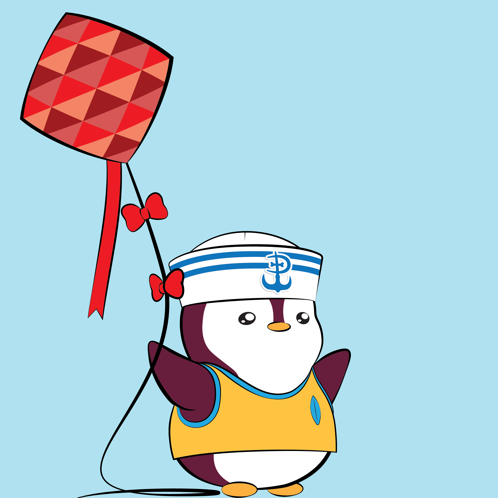

Home
Bridge
Connect Wallet


LIL PUDGY # 2137
Ethereum
LIL PUDGY # 2137
Polygon
TRANSFER YOUR LIL
PUDGY EVERYWHERE !
Small in stature but big in personality, Lil Pudgys are now available seamlessly across multiple blockchains. Connect your wallet now to transfer your Lil Pudgy using the LayerZero ONFT Standard.
Connect wallet
Connect your wallet to transfer ONFT
Connect Wallet